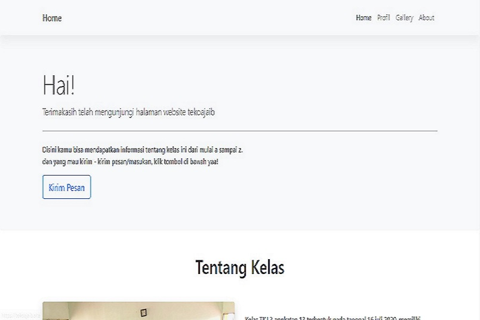

Konten tulisan
Kompasiana
Berisi artikel singkat tentang konfigurasi sistem, jaringan, Mikrotik, dan Cisco Packet Tracer.
Kunjungi BlogSaya Muhamad Ridwan, lulusan SMK yang fokus pada administrasi jaringan, administrasi data, dan konten edukasi teknologi. Halaman ini saya rapikan agar lebih cocok untuk profil profesional.
Bidang utama: jaringan, data, dan konten
Platform aktif untuk berbagi pengetahuan
Website portofolio yang siap dipresentasikan
Berorientasi pada pembelajaran cepat, komunikasi tim, dan dokumentasi yang rapi.
Saya membangun fondasi karier di bidang teknologi melalui pengalaman belajar, magang, dan proyek portofolio yang bisa ditunjukkan secara langsung.

Seorang lulusan SMK yang bersemangat untuk berkembang di bidang teknologi. Saya terbiasa bekerja dalam tim, belajar cepat, dan menjaga hasil kerja tetap rapi. Fokus utama saya adalah administrasi jaringan, administrasi data, serta pembuatan konten edukasi yang sederhana dan mudah dipahami.
Tiga area utama yang paling relevan dengan profil saya saat ini: tulisan edukasi, video tutorial, dan proyek website.
Berisi artikel singkat tentang konfigurasi sistem, jaringan, Mikrotik, dan Cisco Packet Tracer.
Kunjungi Blog
Tutorial Microsoft Office serta dasar penggunaan Linux dan Windows.
Kunjungi Channel
Proyek buku tahunan digital yang dibuat bersama tim untuk menekan biaya dan tetap menghasilkan karya yang layak ditampilkan.
Lihat ProyekSaya terbuka untuk komunikasi profesional melalui email, telepon, atau media sosial.